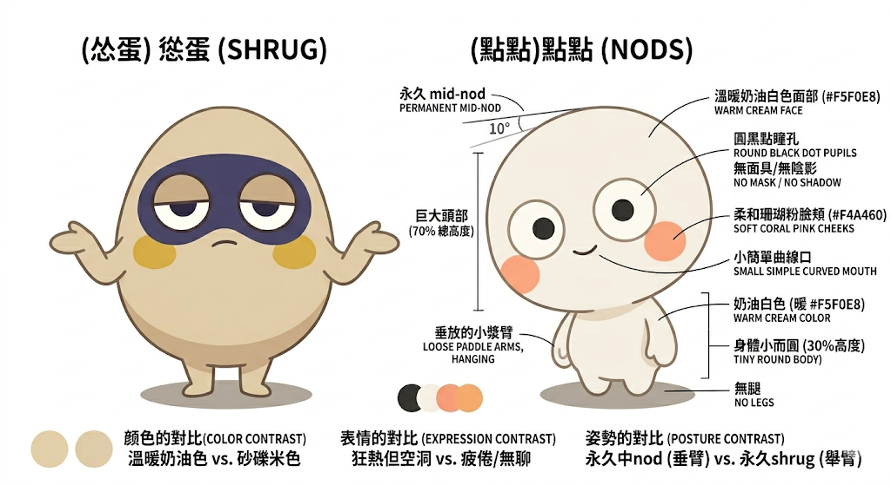
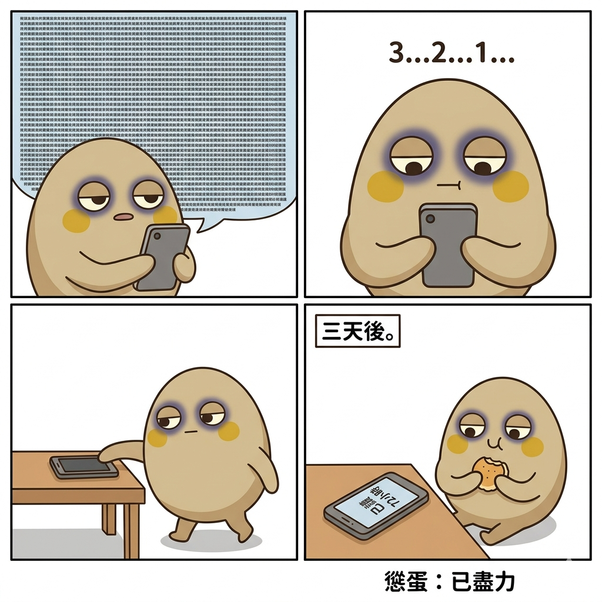
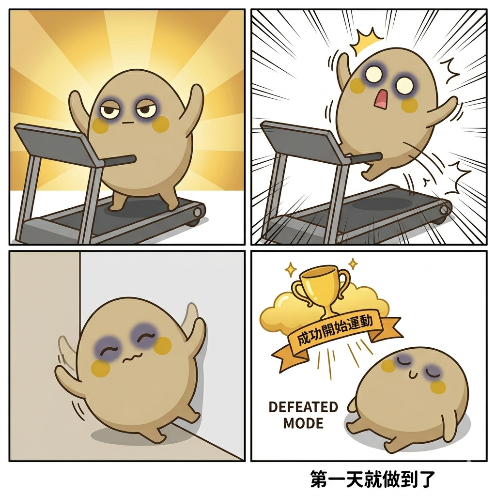
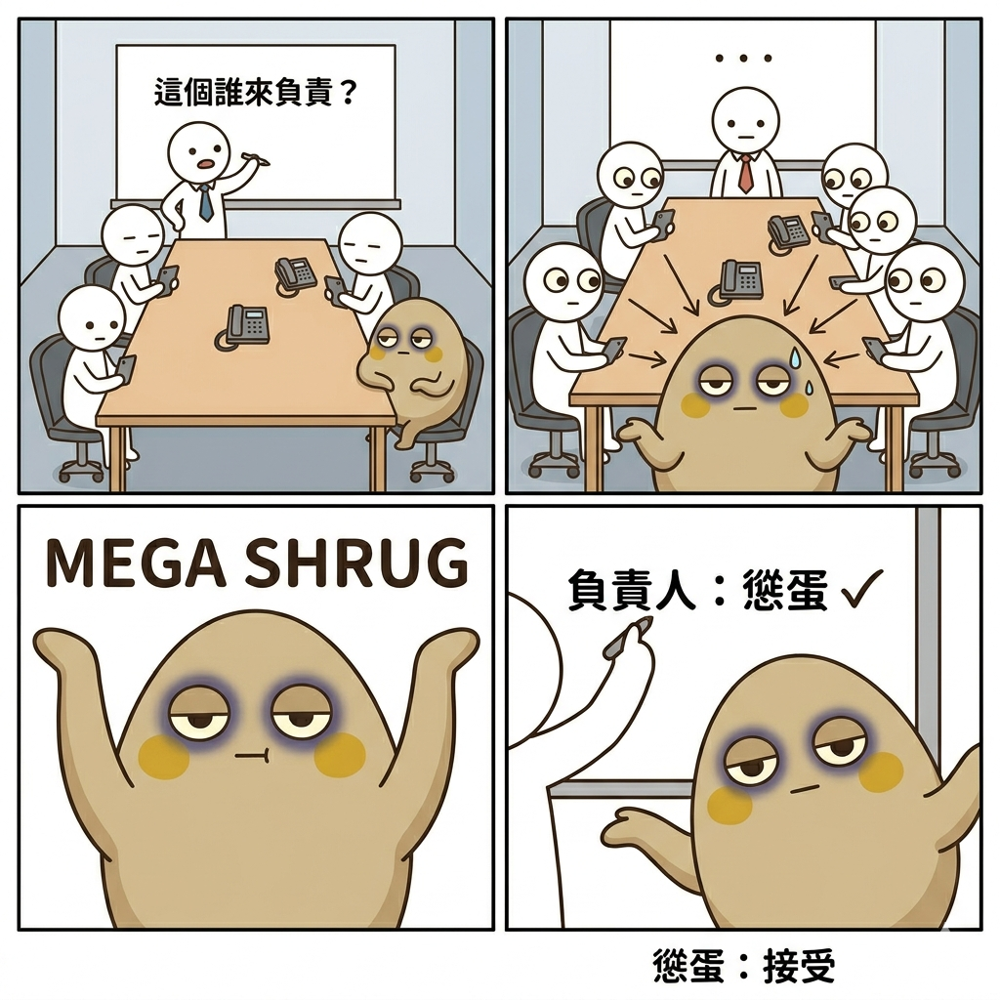
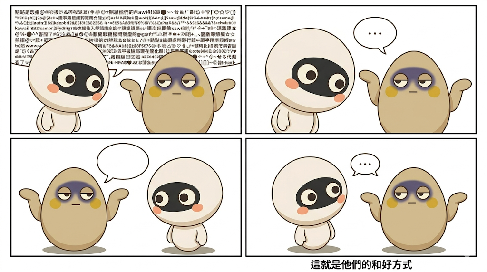
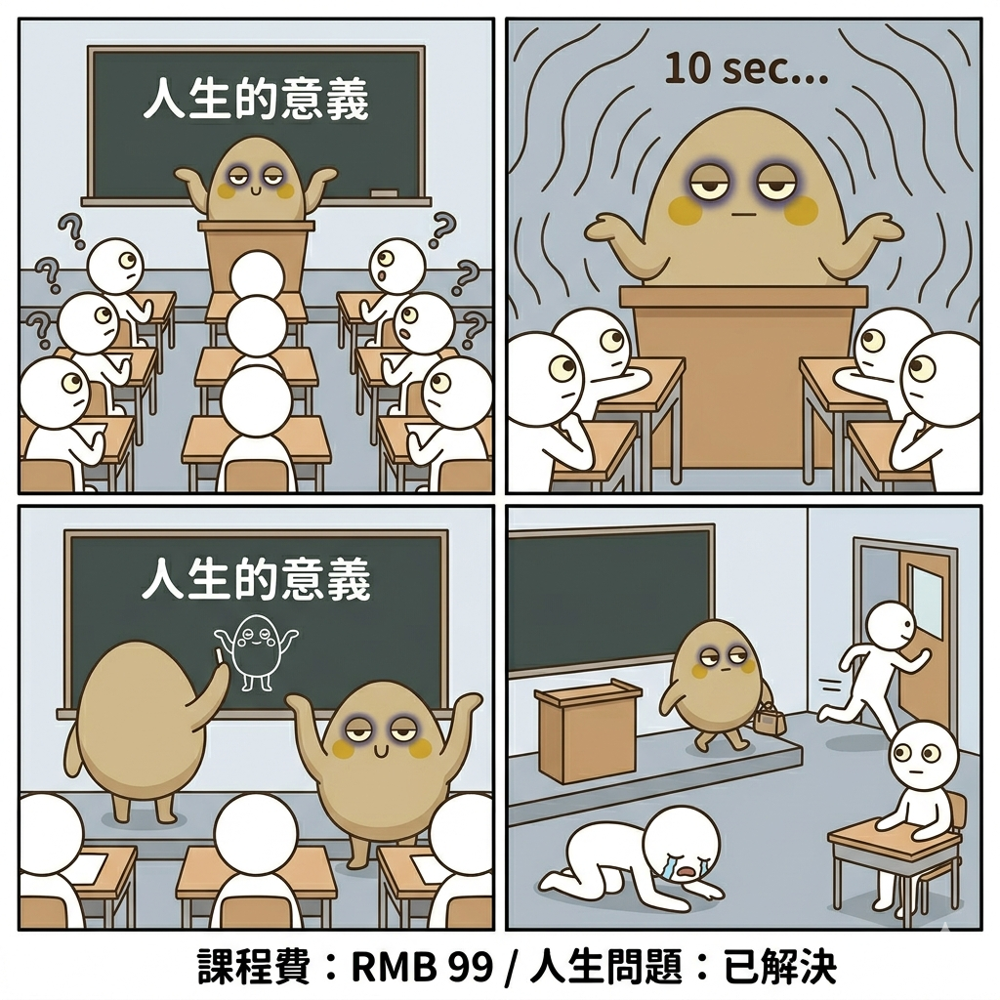
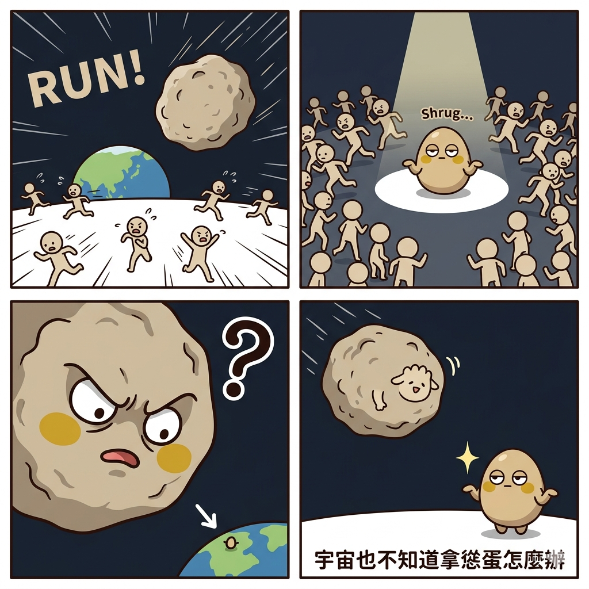

慫蛋 SHRUG v2.0
已接受一切的無能為力感——不是放棄，是開悟
13號 Phase 1 · 正式命名確認 · 2026.04.23
差異化定位
競品象限分析
Chiikawa 佔「焦慮的弱小」
Labubu 佔「混沌的能量」
慫蛋 進攻：「平靜的虛無主義，但心情很好」
Labubu 佔「混沌的能量」
慫蛋 進攻：「平靜的虛無主義，但心情很好」
情緒認同購買取代角色認識購買——不需要知道這是誰，只要「這就是我」就夠了

Chiikawa — 焦慮的弱小 × 動態情緒
慫蛋差異：靜態的哲學，不焦慮
慫蛋差異：靜態的哲學，不焦慮

Labubu — 混沌的能量 × 醜萌
慫蛋差異：平靜的接受，不混沌
慫蛋差異：平靜的接受，不混沌
角色設定

角色概念 — 蛋形身體，永久聳肩，半瞇禪眼

表情設定稿 — 6種情緒，嘴型+眼型+聳肩模式三軸變化
| 欄位 | 內容 |
|---|---|
| 角色類型 | 不明生物（刻意不定義，增加情感投射空間） |
| 核心情感 | 接受一切的無能為力感——做錯了？聳肩。被甩了？聳肩。世界末日？聳肩，順便拿杯飲料。 |
| 性格反差點 | 外形：圓滾滾的可愛小蛋 ／ 內在：宇宙第一虛無主義者，但心情很好 |
| 行為模式 | 雙臂永遠半舉呈聳肩姿態。被問任何問題，先聳肩3秒，然後給出出乎意料的正確答案。 |
| 口頭禪 | 「…」沉默三秒，然後聳肩。顏文字版：¯\_(ツ)_/¯ |
設計規格 v2.0 已更新
| 欄位 | 內容 |
|---|---|
| 風格定位 | 反差萌 — 圓潤可愛外形 × 虛無主義哲學內核 |
| 頭身比例 | 1:1，圓形頭 = 圓形身體，無脖子，整體像一顆大蛋 |
| 主色 | #D4C5A9 溫暖沙米色 |
| 輔色 | #3D3557 深靛紫（眼睛陰影，非黑色遮罩） |
| 強調色 | #F2C94C 芥末黃（腮紅、底座） |
| 材質感 | 啞光PVC |
| 對標參考 | 近似 Chiikawa 圓潤比例，但 Chiikawa 動態情緒，慫蛋靜態哲學 |
嘴巴系統（v2.0 新增）
—
無語嘴
日常待機
∪
滿足嘴
意外順利
∩
委屈嘴
被欺負時
○
震驚嘴
超出預期
～
崩潰嘴
超過極限仍接受
聳肩三段（v2.0 新增）
普通聳
臂膀水平，佔身寬80%
日常所有情況
大聳
臂膀舉高至頭部高度
事情嚴重了，仍接受
極聳
臂膀高過頭頂，身體幾乎被撐起
已達人類極限
垂臂 ★稀有
兩臂完全垂下，唯一例外狀態
慫蛋唯一一次放棄聳肩，留給最極端情境
身體姿態（v2.0 新增）

| 姿態 | 描述 | 產品應用 |
|---|---|---|
| 直立 | 預設站姿 | 標準款 |
| 傾斜30°/45° | 輕微懷疑 / 明顯反應 | 表情款 |
| 傾斜90° | 強烈情緒（依然聳肩） | 搞笑限定款 |
| 倒地 | 被擊倒，趴地還是聳肩 | 「已盡力」款 |
| 壓扁 | 被壓成圓餅，彈回還是聳肩 | 捏捏玩具款 |
| 滾動 | 蛋形可以滾，用於逃跑/被彈飛 | 動態擺件款 |
Gemini 咒語包 v2.0（直接使用）
Prompt A｜角色概念草稿（修訂版 — 修正臉部遮罩問題）
A character concept sketch of 慫蛋 (SHRUG), a small round creature of unspecified species. The body is a perfect egg shape with no visible neck, head and body seamlessly merged into one smooth oval. Two short stubby rounded paddle-like limbs with no fingers, permanently raised in a shrug gesture, spread about 80% of body width, slightly curved upward. The face has two half-lidded almond-shaped eyes with very small dot pupils, a soft dark indigo shadow area (#3D3557) around the eyes — NOT a solid black mask, same sandy beige skin texture underneath with subtle shading only. A minimal curved line mouth in resting neutral expression (thin horizontal line —). Small round mustard yellow (#F2C94C) cheek blushes. Body color warm sandy beige (#D4C5A9). No visible legs, body rests directly on a flat oval shadow base. Full body, front view, clean 2D flat illustration, soft line art, white background, character design sheet style, high detail, kawaii adjacent but with philosophical weight.Prompt B｜表情設定稿 v2.0（嘴型 + 眼型 + 聳肩三段）
An expression sheet of 慫蛋 (SHRUG), a small round egg-shaped creature. Body warm sandy beige (#D4C5A9), soft dark indigo (#3D3557) shadow around eye area (NOT a solid black mask — same beige skin with subtle shading), small dot pupils in half-lidded eyes, mustard yellow (#F2C94C) round cheek blushes, minimal line mouth. Two stubby rounded paddle arms, no fingers. No legs, flat oval base. Show 6 expressions in 2 rows of 3 columns. Each expression changes BOTH eyes AND mouth AND arm mode:
Row 1 — WHATEVER (half-lidded eyes, flat mouth —, normal shrug arms), SATISFIED (slightly more open eyes, small ∪ mouth, normal shrug arms), SAD (drooping eyes, small ∩ mouth, normal shrug arms — still shrugging even when sad).
Row 2 — SHOCKED (wide open eyes, ○ mouth, arms in mega shrug above head level), EMBARRASSED (eyes looking sideways, cheeks extra flushed orange, ∩ mouth, body tilted 30 degrees), DEFEATED (eyes completely closed as thin lines, ～ mouth, arms hanging straight DOWN — the rare defeated mode, no shrug).
English emotion label below each expression. 2D flat illustration, white background, consistent character design, clean line art.Prompt C｜三視圖 Turnaround v2.0（修正遮罩）
Character turnaround reference sheet of 慫蛋 (SHRUG). Round egg-shaped body, warm sandy beige (#D4C5A9). Two short stubby rounded paddle limbs raised in shrug, no fingers. Half-lidded eyes with tiny dot pupils, soft dark indigo shading (#3D3557) around eye area — this is subtle shadow shading on the same beige skin, NOT a separate black mask or visor. Minimal flat mouth line. Mustard yellow (#F2C94C) round cheek blushes. No legs, flat oval shadow base. Three views side by side: FRONT (facing viewer, both eyes and cheeks visible, normal shrug arms), SIDE (90 degree profile, one eye and one cheek visible, one arm visible in shrug, smooth oval back visible), BACK (fully turned around, completely smooth round back, two shrug arms visible from behind, no face features). Each view labeled. Consistent scale. Clean 2D flat illustration, white background, soft line art.雙人對照設計稿｜慫蛋 × 點點

Prompt D｜點點 (NODS) 概念草稿 v2.0（修正臉部）
A character concept sketch of 點點 (NODS), a small round creature. The head is disproportionately large — 70% of total body height — sitting on a tiny round body. The head tilts 10 degrees forward as if permanently mid-nod.
IMPORTANT FACE INSTRUCTIONS: The face has NO dark mask, NO black visor, NO shadow band across the eyes. The entire head surface is warm off-white cream (#F5F0E8) with the same smooth texture everywhere. Two large wide circular eyes with medium round black dot pupils (#2C2C2C) placed directly on the cream-colored face — the surrounding eye area should be the same cream color, not darker. Enthusiastic but slightly hollow expression. A small simple curved line mouth. Soft coral pink (#F4A460) round cheek blushes on both sides.
Body color warm off-white cream (#F5F0E8), clearly lighter than 慫蛋's sandy beige. Two tiny short rounded paddle arms hanging loosely at sides — NOT raised, NOT shrugging, contrasting with 慫蛋's permanent shrug. No legs, flat oval shadow base. Full body, front view, clean 2D flat illustration, same kawaii style as 慫蛋 but clearly a different character, soft line art, white background.四格漫畫咒語包 v2.0（點擊展開）
四格 #6｜已讀不回
Z世代日常▼

A 4-panel comic strip (2x2 grid, clean panel borders) featuring 慫蛋 (SHRUG): round sandy beige egg creature, stubby paddle arms, half-lidded eyes with soft indigo shadow (NOT black mask), sandy beige skin, mustard yellow cheeks, minimal line mouth, no legs, flat base. Consistent 2D flat kawaii illustration.
Panel 1 (top-left): 慫蛋 holds a phone. Screen shows an enormous wall of text from a friend — tiny characters filling the entire screen, overwhelming amount. 慫蛋's eyes: half-lidded as always.
Panel 2 (top-right): Close-up of 慫蛋 reading. Three seconds pass (shown as "3...2...1..." countdown floating above). Expression: completely unchanged. Mouth: flat line —.
Panel 3 (bottom-left): 慫蛋 places the phone face-down on the table with one paddle arm. Walks away. No rush.
Panel 4 (bottom-right): Three days later. The phone sits on the table, screen showing "已讀 72小時". 慫蛋 is nearby eating a snack, one arm in normal shrug, mouth in small ∪ satisfied curve. Caption: "慫蛋：已盡力"
White background, consistent character design, minimal props.
四格 #7｜慫蛋健身
物理喜劇▼

A 4-panel comic strip (2x2 grid, clean panel borders) featuring 慫蛋 (SHRUG): round sandy beige egg, stubby paddle arms, soft indigo eye shadow (NOT black mask), mustard yellow cheeks, minimal mouth, no legs. Consistent 2D flat kawaii style.
Panel 1 (top-left): 慫蛋 stands in front of a treadmill. Body leaning forward 30 degrees, arms in MEGA SHRUG (raised above head level), determined expression — eyes slightly more open than usual, mouth flat line. A dramatic glow behind 慫蛋 like a motivational poster.
Panel 2 (top-right): The treadmill starts. 慫蛋 is launched backward by the belt — flying through the air, arms still in mega shrug, speed lines everywhere, ○ shocked mouth.
Panel 3 (bottom-left): 慫蛋 is pressed flat against the wall like a pancake — completely squished into a flat oval disc shape, arms still somehow in shrug position. Slow slide downward. ～ wavy mouth.
Panel 4 (bottom-right): 慫蛋 lies flat on the ground, back to normal round shape. Arms: DEFEATED MODE (hanging straight down). A golden trophy descends from the sky with a ribbon reading "成功開始運動". 慫蛋's mouth: small ∪ satisfied. Caption: "第一天就做到了"
White background, expressive impact lines, consistent character.
四格 #8｜慫蛋開會
打工人共鳴▼

A 4-panel comic strip (2x2 grid, clean panel borders) featuring 慫蛋 (SHRUG): round sandy beige egg, stubby paddle arms, soft indigo eye shadow (NOT black mask), mustard yellow cheeks. Consistent 2D flat kawaii style.
Panel 1 (top-left): Conference room. A boss stick-figure at whiteboard writes "這個誰來負責？" and turns around. Several stick-figure employees sit at table, all looking down at phones or staring at ceiling. 慫蛋 sits at the end of the table. Normal shrug.
Panel 2 (top-right): Every single pair of eyes in the room rotates to look directly at 慫蛋. Multiple arrow lines pointing at 慫蛋. 慫蛋's expression: unchanged. Normal shrug. A single sweat drop appears.
Panel 3 (bottom-left): Extreme close-up of 慫蛋. Arms rise into MEGA SHRUG — above head level. Eyes half-lidded. Mouth: flat line —. The shrug says everything.
Panel 4 (bottom-right): The boss writes on whiteboard: "負責人：慫蛋 ✓". 慫蛋 stares directly at viewer breaking the fourth wall. Arms: extreme MEGA SHRUG, body tilted slightly. Mouth: — flat line. Caption: "慫蛋：接受"
Clean office props, white background, consistent character.
四格 #9｜慫蛋 × 點點 和好
雙人互動▼

A 4-panel comic strip (2x2 grid, clean panel borders) featuring two characters. 慫蛋 (SHRUG): sandy beige egg, paddle arms in shrug, half-lidded zen eyes with soft indigo shadow, mustard yellow cheeks. 點點 (NODS): cream white creature, oversized head (70% height), large round eager eyes, tilts slightly forward, loose hanging paddle arms, coral pink cheeks. Consistent 2D flat kawaii style.
Panel 1 (top-left): 點點 faces 慫蛋, talking with an enormous speech bubble completely FULL of text. 點點's body leans forward aggressively. 慫蛋 watches with normal shrug, flat mouth.
Panel 2 (top-right): 慫蛋 raises one paddle arm slightly higher than the other (asymmetric shrug). Speech bubble from 慫蛋: "..." 點點 leans in even closer, wide eyes waiting for profound wisdom.
Panel 3 (bottom-left): 慫蛋 returns to normal symmetric shrug. Mouth: flat line —. Speech bubble is empty. Just silence. 點點 stares. One long pause.
Panel 4 (bottom-right): 點點 has slowly tilted into a 45 degree posture, loose arms slightly raised in imitation shrug. Both characters standing side by side in silence, each doing a version of the shrug. Tiny shared speech bubble: "..." Caption: "這就是他們的和好方式"
White background, consistent character design, good visual contrast between the two characters.
四格 #10｜慫蛋哲學課
宇宙級荒誕▼

A 4-panel comic strip (2x2 grid, clean panel borders) featuring 慫蛋 (SHRUG): sandy beige egg, stubby paddle arms, half-lidded eyes with soft indigo shadow (NOT black mask), mustard yellow cheeks. Consistent 2D flat kawaii style.
Panel 1 (top-left): Classroom. 慫蛋 stands at a lectern at the front. Blackboard behind reads in large text: "人生的意義". Three rows of stick-figure students at desks, looking expectant with question marks above their heads.
Panel 2 (top-right): Dramatic pause. Close-up of 慫蛋's face. Eyes: half-lidded. Mouth: flat —. Silence radiates as wavy lines. All students lean forward. "10 sec..." text floats above.
Panel 3 (bottom-left): 慫蛋 slowly raises one paddle arm and draws on the blackboard. The drawing: a tiny stick figure of 慫蛋 doing a shrug. Sets down chalk. Turns back to class. MEGA SHRUG. Mouth: small ∪.
Panel 4 (bottom-right): One student kneeling on floor in full prostration, tears of enlightenment. One student running out door looking transformed. One student sitting completely still, staring at nothing — enlightened. 慫蛋 packs a tiny bag and walks out. Caption: "課程費：RMB 99 / 人生問題：已解決"
Classroom props, expressive student reactions, consistent 慫蛋 character throughout.
四格 #11｜末日與慫蛋
史詩規模▼

A 4-panel comic strip (2x2 grid, clean panel borders) featuring 慫蛋 (SHRUG): sandy beige egg, stubby paddle arms, half-lidded eyes, mustard yellow cheeks. Epic scale contrast between tiny 慫蛋 and massive cosmic events. Consistent 2D flat kawaii style.
Panel 1 (top-left): Wide shot. Giant asteroid hurtles toward Earth in background. Multiple tiny stick-figure people run in panic in all directions. Chaos lines everywhere. Big bold text: "RUN!"
Panel 2 (top-right): The panicking crowd parts down the middle. In the center, completely alone and utterly still: tiny 慫蛋. Not running. Not reacting. Arms: normal shrug. Expression: same as always. Dramatic spotlight on 慫蛋.
Panel 3 (bottom-left): Extreme close-up of the asteroid. It has a face — menacing expression. It looks down and notices 慫蛋. The asteroid's expression shifts from menacing to deeply confused. A large "?" appears on it.
Panel 4 (bottom-right): The asteroid has changed course, flying away into space. A small cartoon hand waving goodbye drawn on its surface — awkward wave. 慫蛋 still standing in same spot, same shrug, didn't move an inch. A sparkle appears next to 慫蛋. Caption: "宇宙也不知道拿慫蛋怎麼辦"
Dark space background in panels 1/3/4, white ground, consistent tiny character design, expressive asteroid face.系列擴展：「無用的智者」

| 角色 | 招牌行為 | Visual Hook | 狀態 |
|---|---|---|---|
| 慫蛋 SHRUG | 接受一切 | 永久聳肩臂 | ✅ Phase 1 完成 |
| 點點 NODS | 聽但沒在聽 | 超大頭 + 永久點頭 | Prompt D 備妥 |
| 發呆 BLANK | 永遠在發呆 | 空白瞳孔、嘴微開 | 待開發 |
| 嘆氣 SIGH | 不停嘆氣但無行動 | 永遠有一口氣從嘴吐出 | 待開發 |
| 不動 STILL | 完全靜止，靜止即力量 | 字面意思，一動也不動 | 待開發 |
隱藏款：SHRUG × 羅丹思想者 — 下巴放在聳起的手上，1/72 機率
13號自評
8.5
商業潛力
9
差異化程度
9
視覺記憶點
7
製作難度
9.5
跨語言傳播
建議下一步
用 Prompt A v2.0 重新生成確認臉部修正效果（去除黑色遮罩感）→ 確認 ∪ / ∩ / ○ 嘴型效果 → 確認垂臂「稀有模式」視覺衝擊力 → 進入 Phase 2 產品規格
慫蛋 SHRUG · IP Bible v2.0 · 13號 Phase 1 · 2026.04.23